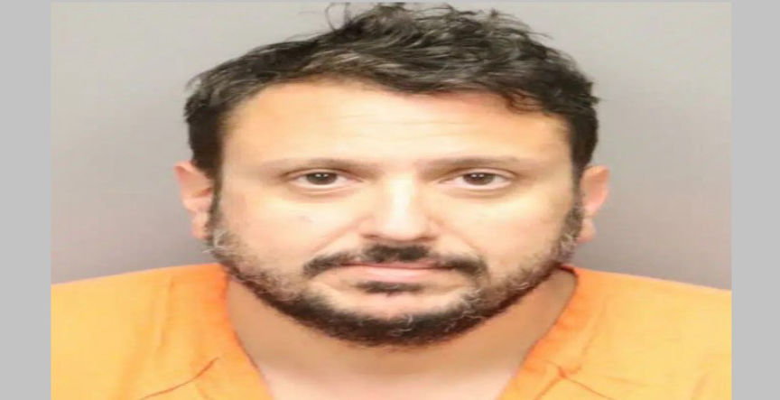
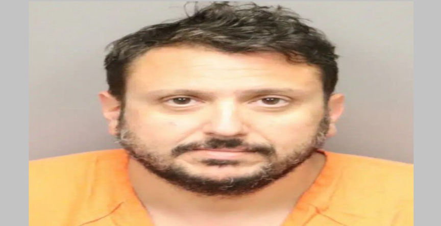

Florida Man Indicted for Producing and Distributing Child Abuse Material
A Florida man was charged with producing and distributing child abuse material through dark web child abuse platforms.

According to court documents, 39-year-old Justin Ryan Culmo, was linked to two now-defunct dark web sites used to distribute child sexual abuse material. law enforcement took down the sites in 2015 and 2017.
The investigations that resulted in the identification and arrest of Culmo were launched in July 2023. HSI investigators received information that a victim of child abuse had been identified by facial recognition technology. The child abuse material had been posted on the two dark web sites by a user going by the usernames "Avalanche" and "TheRealAvalanche."
The identity of the victim was confirmed by her parents, who also disclosed that they believed the photos were taken between 2011 and 2014. The victim’s father also said that he remembered his work friend, Culmo, coming over while he was raking leaves in the backyard.
The father entered the home and found Culmo beside his daughter in the bedroom. When confronted, Culmo became very quiet and left the house. The investigators established that there were several child sexual abuse allegations made against Culmo.
The investigators went through posts made by Avalanche and TheRealAvalanche. The posts contained highly graphic descriptions of the abuse he subjected his victims. In addition to the child abuse material, he posted about spycams and encryption to avoid discovery and arrests.
The investigators executed a search warrant at Culmo's residence on September 26. The Agents found 11 pairs of female child underwear and five spy cameras in a locked drawer.
He reportedly admitted to using the usernames "Avalanche" and "TheRealAvalanche," and producing the child abuse material. He even admitted he had been producing child abuse material of his two daughters.
Culmo was charged with three counts of production of child sex abuse material, one count of distribution, and one count of possession of child sexual abuse material.
If convicted, Culmo faces a minimum mandatory penalty of 15 years in federal prison for each production count, a minimum mandatory 5 years for the distribution count, and up to 20 years in federal prison for the possession offense.

Justin Ryan Culmo
According to court documents, 39-year-old Justin Ryan Culmo, was linked to two now-defunct dark web sites used to distribute child sexual abuse material. law enforcement took down the sites in 2015 and 2017.
The investigations that resulted in the identification and arrest of Culmo were launched in July 2023. HSI investigators received information that a victim of child abuse had been identified by facial recognition technology. The child abuse material had been posted on the two dark web sites by a user going by the usernames "Avalanche" and "TheRealAvalanche."
The identity of the victim was confirmed by her parents, who also disclosed that they believed the photos were taken between 2011 and 2014. The victim’s father also said that he remembered his work friend, Culmo, coming over while he was raking leaves in the backyard.
The father entered the home and found Culmo beside his daughter in the bedroom. When confronted, Culmo became very quiet and left the house. The investigators established that there were several child sexual abuse allegations made against Culmo.
The investigators went through posts made by Avalanche and TheRealAvalanche. The posts contained highly graphic descriptions of the abuse he subjected his victims. In addition to the child abuse material, he posted about spycams and encryption to avoid discovery and arrests.
The investigators executed a search warrant at Culmo's residence on September 26. The Agents found 11 pairs of female child underwear and five spy cameras in a locked drawer.
He reportedly admitted to using the usernames "Avalanche" and "TheRealAvalanche," and producing the child abuse material. He even admitted he had been producing child abuse material of his two daughters.
Culmo was charged with three counts of production of child sex abuse material, one count of distribution, and one count of possession of child sexual abuse material.
If convicted, Culmo faces a minimum mandatory penalty of 15 years in federal prison for each production count, a minimum mandatory 5 years for the distribution count, and up to 20 years in federal prison for the possession offense.